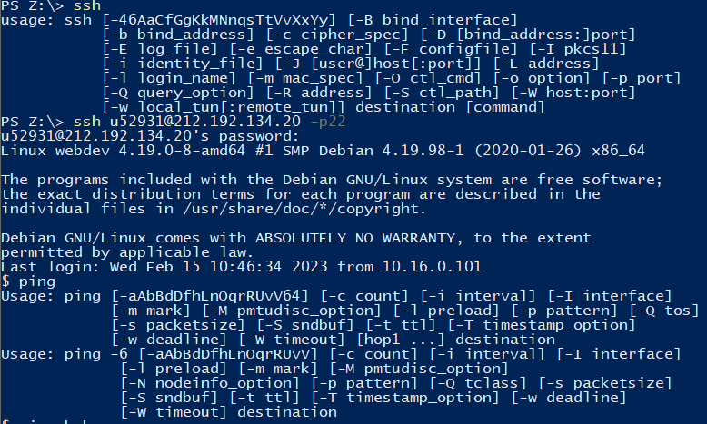
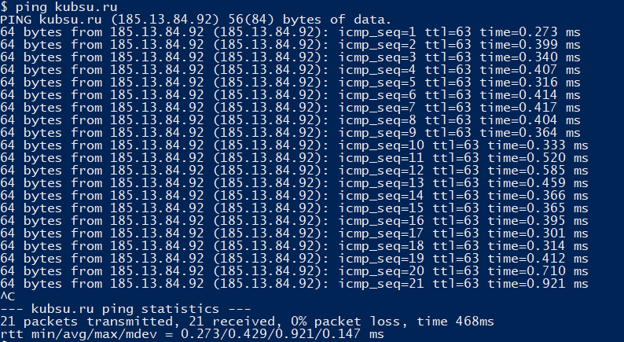
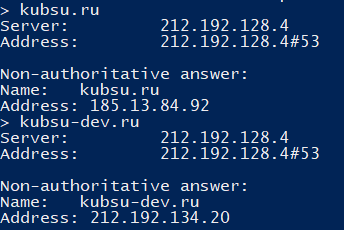
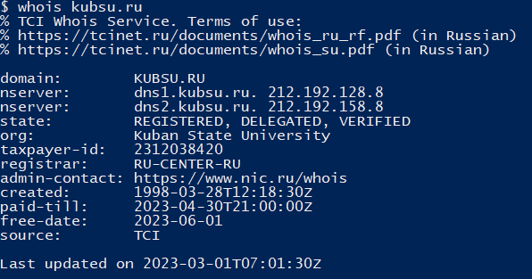
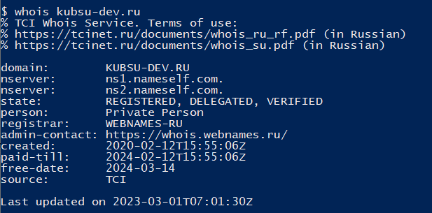

1) Взяли у преподавателя практики логин и пароль доступа к учебному серверу
212.192.134.20 (kubsu-dev.ru). Подключились к нему по SSH с помощью клиента
команды ssh.

2) С помощью команды ping на учебном сервере узнали IP-адрес веб-сервера
kubsu.ru.

3) С помощью команды nslookup узнать A-записи и MX-записи домена kubsu.ru и
kubsu-dev.ru.

4) С помощью команды whois узнать дату регистрации домена kubsu.ru.

5) С помощью команды whois узнать дату регистрации домена kubsu-
dev.ru.

6)